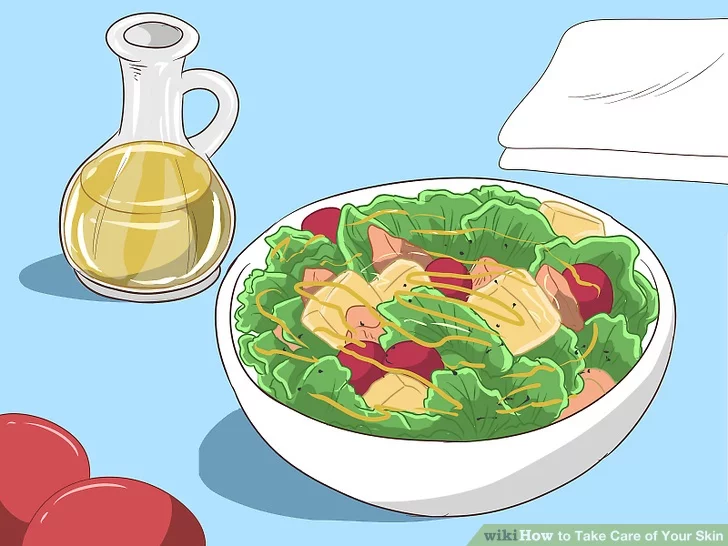

Skin Care Basics
Your skin reflects your health. To take care of it, you need to build healthy habits.
- Stay clean
- Block the sun
- Use sunscreen
- Seek shade
- Wear protective clothing
- Don't smoke
- Treat your skin gently
- Limit bath time
- Avoid strong soaps
- Moisturize dry skin
- Eat a healthy diet
- Manage stress
Wash your face twice a day -- once in the morning and once at night before you go to bed. After you cleanse your skin, follow with a toner and moisturizer. Toners help to remove fine traces of oil, dirt, and makeup you may have missed when cleansing. Look for a moisturizer geared toward your skin type -- dry, normal, or oily. Yes, even oily skin can benefit from a moisturizer.
Over time, exposure to ultraviolet (UV) radiation from the sun causes many changes in your skin. It can cause wrinkles, age spots and other skin problems — as well as increase the risk of skin cancer. For the most complete sun protection:
Smoking makes your skin look older and contributes to wrinkles. Smoking narrows the tiny blood vessels in the outermost layers of skin, which decreases blood flow and makes skin paler. This also depletes the skin of oxygen and nutrients that are important to skin health. Smoking also damages collagen and elastin — the fibers that give your skin strength and elasticity. In addition, the repetitive facial expressions you make when smoking — such as pursing your lips when inhaling and squinting your eyes to keep out smoke — can contribute to wrinkles.
To keep it gentle:
A healthy diet can help you look and feel your best. Eat plenty of fruits, vegetables, whole grains and lean proteins.
Uncontrolled stress can make your skin more sensitive and trigger acne breakouts and other skin problems. To encourage healthy skin — and a healthy state of mind — take steps to manage your stress. Get enough sleep, set reasonable limits, scale back your to-do list and make time to do the things you enjoy. The results might be more dramatic than you expect.